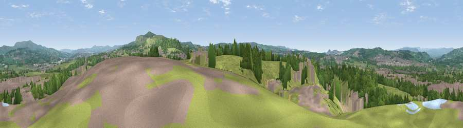

Viewpoint near Clayton-le-Moors
#11913 in England · top 22% of its area beats it · near Clayton-le-MoorsWhere it is
The exact computed spot (SD 75825 30675). Click the marker for map links.
The view, rendered

A 360° render of this exact spot computed from the terrain model, tree cover and land cover — summer colours, afternoon light, calibrated against photographs of famous viewpoints. Real trees, hedges and buildings will differ in detail.
The panorama
Grey silhouette: terrain skyline in each direction (720 bearings, Earth curvature and refraction included). Dashed green: skyline with trees (+15 m) and buildings (+8 m) as obstacles. Blue strip: how far the ground is visible on each bearing.
Where the view opens
Wedge length = distance to the farthest visible ground on that bearing (vegetation-aware). Rings at 10, 25 and 50 km.
What fills the view
50% grassland · 24% woodland · 20% built-up · 5% bare ground
Angular shares of the visible panorama (visual magnitude), not map area. Landscape diversity 0.52 (0–1 Shannon).
Key numbers
More beautiful places nearby
The staircase of upgrades: each row has a higher view potential than everything closer. Driving times are estimates from straight-line distance, calibrated against real road routing — check an actual route before setting out.
| Place | Direction | Drive | Score |
|---|---|---|---|
| Viewpoint near Huncoat | SE · 3 km | ~7 min | 70.6 |
| Great Hameldon | ESE · 4 km | ~9 min | 74.2 |
| Viewpoint near Tockholes | SW · 11 km | ~21 min | 74.7 |
| Pendle Hill | NNE · 12 km | ~22 min | 76.5 |
| Darwen Hill | SW · 12 km | ~22 min | 80.7 |
| Rivington Pike | SW · 20 km | ~35 min | 81.9 |
| White Brow | SSW · 21 km | ~35 min | 82.9 |
| Warton Crag | NNW · 50 km | ~71 min | 83.2 |
53.77185, -2.36827 · source: screening · position refined by local search. Computed location — check access rights before visiting.